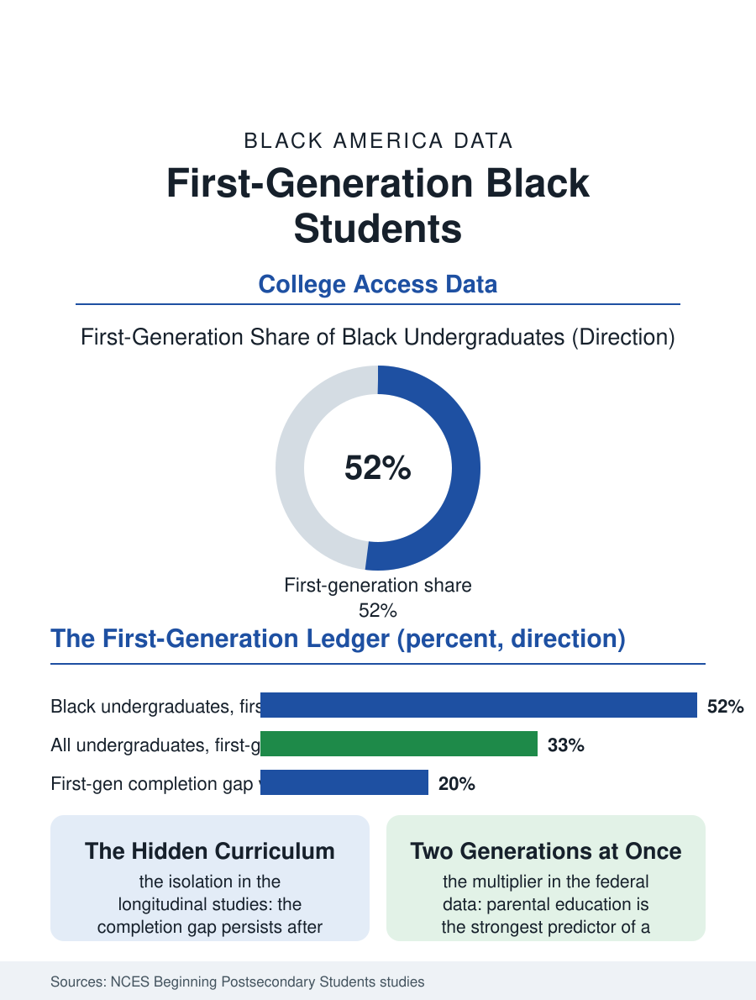

Black Education
First in the Family: The First-Generation File
About half of Black undergraduates are the first in their families to attend college, and the completion gap tracks a hidden curriculum, not ability. The first-generation file.

Being the first in a family to attend college is celebrated on the admissions brochure and complicated in the data. Roughly half or more of Black college students are first-generation by the common definition, neither parent holding a bachelor's degree, a share far above the national rate, and their outcomes, persistence, completion, debt, trace the absence of one specific asset: a household that has run the college obstacle course before. This article reads the first-generation file.
The Knowledge the Brochure Assumes
The federal longitudinal studies give the file its numbers. First-generation students enroll in college at high rates when they are Black, a testament to the aspiration data elsewhere in this atlas, but they complete at markedly lower rates than peers whose parents hold degrees, and the gap persists after controlling for income and preparation, which is how the research isolates its cause: not money alone, and not ability, but navigational knowledge. The unwritten curriculum is long. Office hours are for using, not a formality. The syllabus is a contract. Aid can be appealed. A dropped course in week two is strategy, not failure. Students whose parents hold degrees absorb this syllabus at the kitchen table across eighteen years; first-generation students must acquire it on campus, in real time, while also carrying the roles they never dropped at home. The research names the dual load precisely: first-generation Black students are more likely to be working substantial hours, contributing income to family, and commuting or returning home on weekends to family obligations, a pattern the studies call family achievement guilt's practical cousin, the student succeeding in one world by rationing presence in the other, and being graded by both.
Where the Model Works
The institutions that close the completion gap share a design philosophy visible across the program evaluations: make the hidden curriculum explicit, early, and structural rather than inspirational. Summer bridge programs put first-generation students on campus before the fall, completing a real course, learning the buildings and the bureaucracy, and forming the cohort that research shows carries students through the first-year attrition cliff. Advising models that assign rather than offer, mandatory check-ins, early-alert systems that flag a missed week before it becomes a withdrawn semester, show the strongest completion effects in the rigorous evaluations, because they do not depend on the student knowing what to ask for. Financial design matters the same way: emergency microgrants, four-figure sums against car repairs and textbook shocks, repeatedly show retention returns wildly disproportionate to cost, resolving the exact class of crisis that ends first-generation enrollments in the administrative data, the stopped-out student whose transcript reads as a finance record. HBCUs run a substantial share of this file's success stories, graduating first-generation Black students at rates that outperform sector averages, a performance the institutional research attributes to the accumulation of exactly these practices inside a mission that expects the student to be first and plans for it.
The Degree That Changes Two Generations
The file's last chapter is the payoff's direction of travel. Parental education is the single strongest predictor of a child's college completion in the federal data, which means every first-generation graduate is simultaneously an outcome and an intervention: their children become continuing-generation students by definition, inheriting the kitchen-table syllabus the parent had to build alone. The intergenerational arithmetic makes first-generation completion one of the highest-multiplier investments in the entire education record, a single degree repricing the probabilities for a whole descending line. The debt file adds the caution: first-generation Black graduates carry heavier loans into that multiplier, since the family's wealth could not substitute for borrowing, so the intervention arrives leveraged, and the years of repayment eat into the very accumulation, the home, the savings, the children's own head starts, that the degree was meant to start. The policy thread ties the two halves: completion support during college, and repayment terms after it, decide whether the multiplier compounds or merely survives. The first-generation file closes with the brochure's sentence corrected. Being first is not a celebration the student performs for the institution. It is work the student does for two generations at once, and the institutions that honor it are the ones that stop treating it as a biography and start treating it as a workload.
More in Black Education
Black Educational Attainment: High School Parity, the College Gap
About 89 percent of Black adults hold a high school diploma and one in four holds a bachelor's degree or higher — the attainment ladder, the college completion gap, and the generational trend.
Historically Black Colleges and Universities: Enrollment and Degrees
More than 100 HBCUs enroll roughly 290,000 students and award about one in six Black bachelor's degrees — an outsized share from a small sector. The federal education data.
Black College Enrollment: 2.4 Million Students
About 2.4 million Black students are enrolled in American colleges — nearly two-thirds of them women. The NCES enrollment data by sector, level, and trend.
Source: National Center for Education Statistics, Beginning Postsecondary Students longitudinal studies; Pell Institute analyses of first-generation student outcomes.